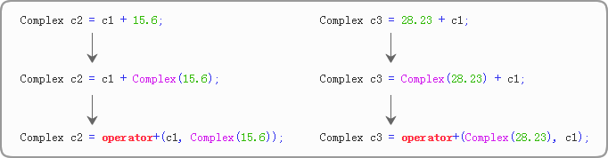
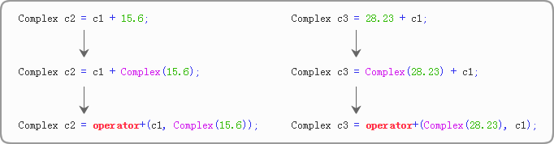

到底以成员函数还是全局函数（友元函数）的形式重载运算符
在上节的例子中，我们以全局函数的形式重载了 +、-、*、/、==、!=，以成员函数的形式重载了 +=、-=、*=、/=，而没有一股脑都写成全局函数或者成员函数，这样做是有原因的，这节我们就来分析一下。
请大家先看下面的例子：
运行结果：
40.6 + 35i
53.23 + 35i
请读者留意第 30、31 行代码，它说明 Complex 类型可以和 double 类型相加，这很奇怪，因为我们并没有对针对这两个类型重载 +，这究竟是怎么做到的呢？
其实，编译器在检测到 Complex 和 double（小数默认为 double 类型）相加时，会先尝试将 double 转换为 Complex，或者反过来将 Complex 转换为 double（只有类型相同的数据才能进行 + 运算），如果都转换失败，或者都转换成功（产生了二义性），才报错。本例中，编译器会先通过构造函数

也就是说，小数被转换成了匿名的 Complex 对象。在这个转换过程中，构造函数
作为了解，这里不再对转换构造函数阐述更多细节，后续将在《C++转换构造函数》一节中深入讲解。
如果将
也就是说，以成员函数的形式重载 +，只能计算
有读者可能会问，编译器明明可以把 28.23 先转换成 Complex 类型再相加呀，也就是下面的形式：
C++ 创始人 Bjarne Stroustrup 也曾考虑过为内部类型（bool、int、double 等）定义额外运算符的问题，但后来还是放弃了这种想法，因为 Bjarne Stroustrup 不希望改变现有规则：任何类型（无论是内部类型还是用户自定义类型）都不能在其定义完成以后再增加额外的操作。这里还有另外的一个原因，C内部类型之间的转换已经够肮脏了，决不能再向里面添乱。而通过成员函数为已存在的类型提供混合运算的方式，从本质上看，比我们所采用的全局函数（友元函数）加转换构造函数的方式还要肮脏许多。
采用全局函数能使我们定义这样的运算符，它们的参数具有逻辑的对称性。与此相对应的，把运算符定义为成员函数能够保证在调用时对第一个（最左的）运算对象不出现类型转换，也就是上面提到的「C++ 不会对调用成员函数的对象进行类型转换」。
总起来说，有一部分运算符重载既可以是成员函数也可以是全局函数，虽然没有一个必然的、不可抗拒的理由选择成员函数，但我们应该优先考虑成员函数，这样更符合运算符重载的初衷；另外有一部分运算符重载必须是全局函数，这样能保证参数的对称性；除了 C++ 规定的几个特定的运算符外，暂时还没有发现必须以成员函数的形式重载的运算符。
简单地了解转换构造函数
在分析以前，我们先来了解一个概念，叫做「转换构造函数」。这个概念将会在《C++转换构造函数》一节中深入讲解，但是为了搞清成员函数和全局函数的区别，本节我们有必要提前了解一下。请大家先看下面的例子：
- #include <iostream>
- using namespace std;
- //复数类
- class Complex{
- public:
- Complex(): m_real(0.0), m_imag(0.0){ }
- Complex(double real, double imag): m_real(real), m_imag(imag){ }
- Complex(double real): m_real(real), m_imag(0.0){ } //转换构造函数
- public:
- friend Complex operator+(const Complex &c1, const Complex &c2);
- public:
- double real() const{ return m_real; }
- double imag() const{ return m_imag; }
- private:
- double m_real; //实部
- double m_imag; //虚部
- };
- //重载+运算符
- Complex operator+(const Complex &c1, const Complex &c2){
- Complex c;
- c.m_real = c1.m_real + c2.m_real;
- c.m_imag = c1.m_imag + c2.m_imag;
- return c;
- }
- int main(){
- Complex c1(25, 35);
- Complex c2 = c1 + 15.6;
- Complex c3 = 28.23 + c1;
- cout<<c2.real()<<" + "<<c2.imag()<<"i"<<endl;
- cout<<c3.real()<<" + "<<c3.imag()<<"i"<<endl;
- return 0;
- }
40.6 + 35i
53.23 + 35i
请读者留意第 30、31 行代码，它说明 Complex 类型可以和 double 类型相加，这很奇怪，因为我们并没有对针对这两个类型重载 +，这究竟是怎么做到的呢？
其实，编译器在检测到 Complex 和 double（小数默认为 double 类型）相加时，会先尝试将 double 转换为 Complex，或者反过来将 Complex 转换为 double（只有类型相同的数据才能进行 + 运算），如果都转换失败，或者都转换成功（产生了二义性），才报错。本例中，编译器会先通过构造函数
Complex(double real);将 double 转换为 Complex，再调用重载过的 + 进行计算，整个过程类似于下面的形式：
也就是说，小数被转换成了匿名的 Complex 对象。在这个转换过程中，构造函数
Complex(double real);起到了至关重要的作用，如果没有它，转换就会失败，Complex 也不能和 double 相加。Complex(double real);在作为普通构造函数的同时，还能将 double 类型转换为 Complex 类型，集合了“构造函数”和“类型转换”的功能，所以被称为「转换构造函数」。换句话说，转换构造函数用来将其它类型（可以是 bool、int、double 等基本类型，也可以是数组、指针、结构体、类等构造类型）转换为当前类类型。作为了解，这里不再对转换构造函数阐述更多细节，后续将在《C++转换构造函数》一节中深入讲解。
为什么要以全局函数的形式重载 +
上面的例子中，我们定义的operator+是一个全局函数（一个友元函数），而不是成员函数，这样做是为了保证 + 运算符的操作数能够被对称的处理；换句话说，小数（double 类型）在 + 左边和右边都是正确的。第 30 行代码中，15.6 在 + 的右边，第 31 行代码中，28.23 在 + 的左边，它们都能够被顺利地转换为 Complex 类型，所以不会出错。如果将
operator+定义为成员函数，根据“+ 运算符具有左结合性”这条原则，Complex c2 = c1 + 15.6;会被转换为下面的形式：
Complex c2 = c1.operator+(Complex(15.6));
这就是通过对象调用成员函数，是正确的。而对于Complex c3 = 28.23 + c1;，编译器会尝试转换为不同的形式：
Complex c3 = (28.23).operator+(c1);
很显然这是错误的，因为 double 类型并没有以成员函数的形式重载 +。也就是说，以成员函数的形式重载 +，只能计算
c1 + 15.6，不能计算28.23 + c1，这是不对称的有读者可能会问，编译器明明可以把 28.23 先转换成 Complex 类型再相加呀，也就是下面的形式：
Complex c3 = Complex(28.23).operator+(c1);
为什么就是不转换呢？没错，编译器不会转换，原因在于，C++ 只会对成员函数的参数进行类型转换，而不会对调用成员函数的对象进行类型转换。以下面的语句为例：obj.func(params);
编译器不会尝试对 obj 进行任何类型转换，它有 func() 成员函数就调用，没有就报错。而对于实参 params，编译器会“拼命地”将它转换为形参的类型。为什么要以成员函数的形式重载 +=
我们首先要明白，运算符重载的初衷是给类添加新的功能，方便类的运算，它作为类的成员函数是理所应当的，是首选的。不过，类的成员函数不能对称地处理数据，程序员必须在（参与运算的）所有类型的内部都重载当前的运算符。以上面的情况为例，我们必须在 Complex 和 double 内部都重载 + 运算符，这样做不但会增加运算符重载的数目，还要在许多地方修改代码，这显然不是我们所希望的，所以 C++ 进行了折中，允许以全局函数（友元函数）的形式重载运算符。C++ 创始人 Bjarne Stroustrup 也曾考虑过为内部类型（bool、int、double 等）定义额外运算符的问题，但后来还是放弃了这种想法，因为 Bjarne Stroustrup 不希望改变现有规则：任何类型（无论是内部类型还是用户自定义类型）都不能在其定义完成以后再增加额外的操作。这里还有另外的一个原因，C内部类型之间的转换已经够肮脏了，决不能再向里面添乱。而通过成员函数为已存在的类型提供混合运算的方式，从本质上看，比我们所采用的全局函数（友元函数）加转换构造函数的方式还要肮脏许多。
采用全局函数能使我们定义这样的运算符，它们的参数具有逻辑的对称性。与此相对应的，把运算符定义为成员函数能够保证在调用时对第一个（最左的）运算对象不出现类型转换，也就是上面提到的「C++ 不会对调用成员函数的对象进行类型转换」。
总起来说，有一部分运算符重载既可以是成员函数也可以是全局函数，虽然没有一个必然的、不可抗拒的理由选择成员函数，但我们应该优先考虑成员函数，这样更符合运算符重载的初衷；另外有一部分运算符重载必须是全局函数，这样能保证参数的对称性；除了 C++ 规定的几个特定的运算符外，暂时还没有发现必须以成员函数的形式重载的运算符。
C++ 规定，箭头运算符->、下标运算符[ ]、函数调用运算符( )、赋值运算符=只能以成员函数的形式重载。
关注微信公众号「站长严长生」，在手机上阅读所有教程，随时随地都能学习。本公众号由C语言中文网站长运营，每日更新，坚持原创，敢说真话，凡事有态度。

微信扫描二维码关注公众号